Близкие
Агрегатор акций в барах района. Пришли нарисовать экраны — в итоге перекроил флоу и нашёл продуктовый инсайт.
- Design consulting
- Telegram мини-апп
- 2 недели · спринт
- Концепт (ушёл в разработку)
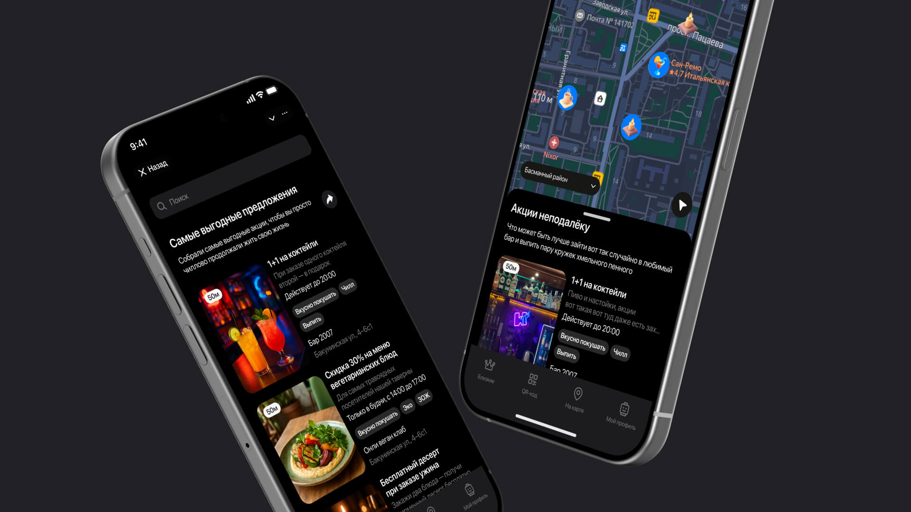
Нарисовать экраны. Это был не тот запрос.
Команда делала Telegram мини-апп — агрегатор акций в барах района. Пришли с готовой концепцией, списком акций и просьбой отрисовать интерфейс. Стандартный дизайн-подряд.
За 2 недели — от аналитики и погружения до согласованных прототипов. Конкурентов прямых на тот момент не было, только пара агрегаторов близкой ниши. Успели собрать портрет аудитории и прототипировать на существующей дизайн-системе.
Категории строились от акций, а не от людей
В исходной концепции навигация делилась по типам спецпредложений: «1+1 на коктейли», «−20% на кальян», «скидка на завтрак». Это язык маркетинга, не язык пользователя. Человек, выходя из дома вечером, не думает «где сейчас 1+1 на коктейли». Он думает «куда пойти выпить с друзьями».
Сделал портрет аудитории
Разделил пользователей на три сегмента — у каждого своя логика поведения и своё ожидание от продукта.
- Скидкохантеры (18–24): максимальная экономия, ценят геймификацию, реферальные механики.
- Прагматики (25–34): баланс качества и цены, регулярные посетители, ценят персонализацию.
- Ценители атмосферы (25–44): ищут уникальные места и опыт, готовы платить больше.
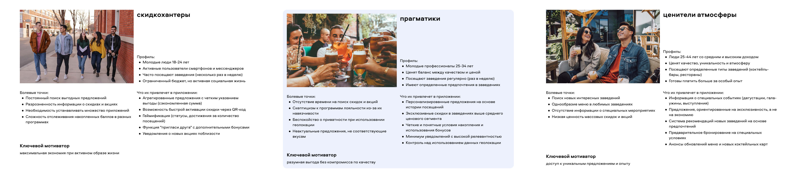
Перекроил категории под джобы пользователя
Вместо каталога акций — каталог ситуаций. Пользователь выбирает контекст, приложение показывает подходящие места с активными предложениями.
Новые категории
- Вкусно покушать
- Выпить
- Взбодриться
- Поугарать
- Познакомиться
- Заблудиться в трёх барах
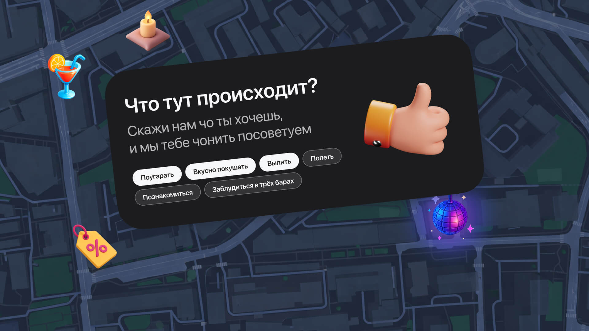
Петля лояльности
Заложил механику retention: чем чаще чекинишься в заведении — тем более выгодные акции открываются. Работает и на привязку пользователя к месту, и на возвратность для бизнеса.
Экраны
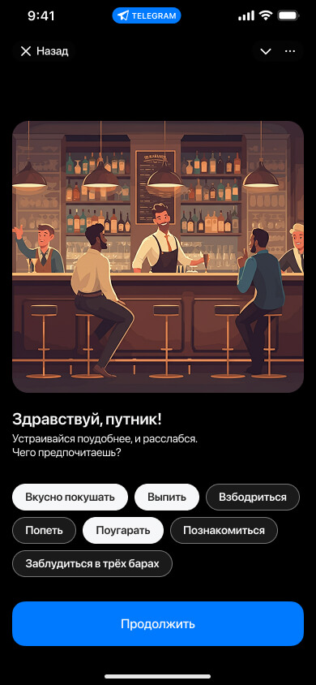
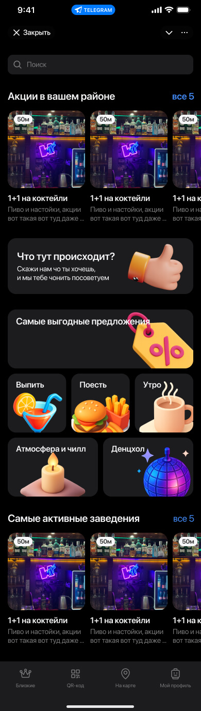
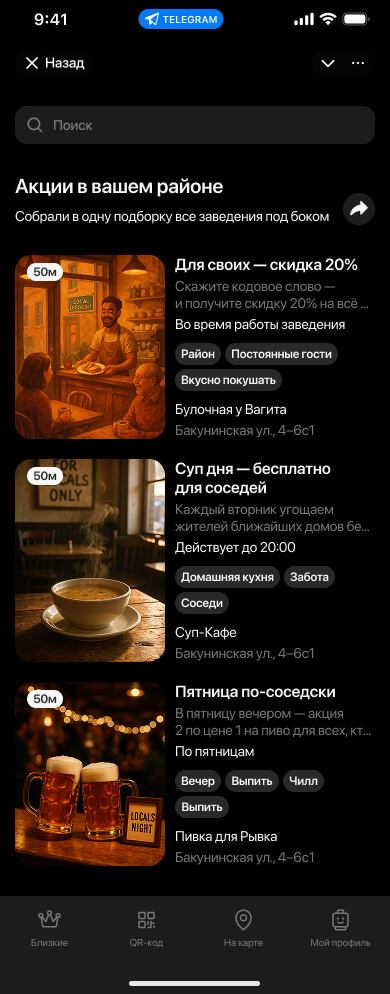
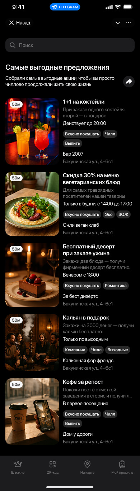
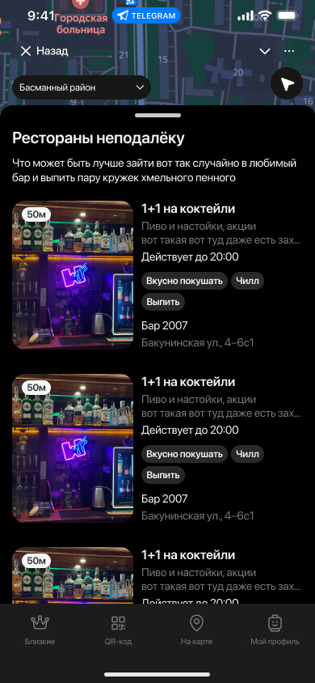
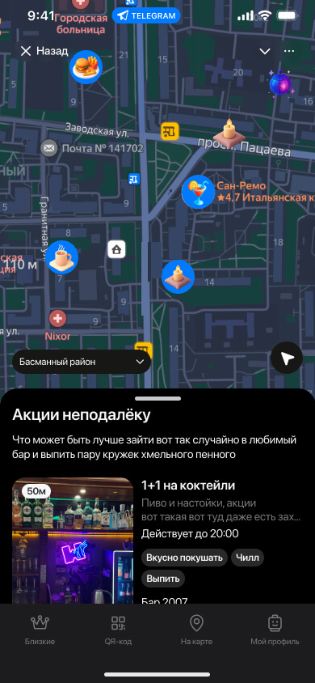
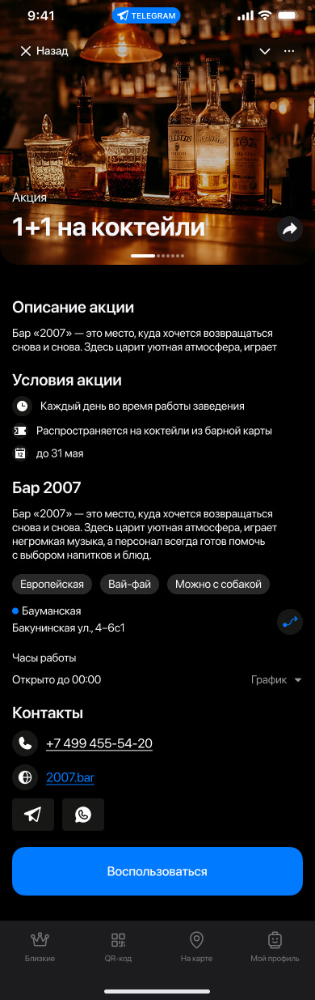
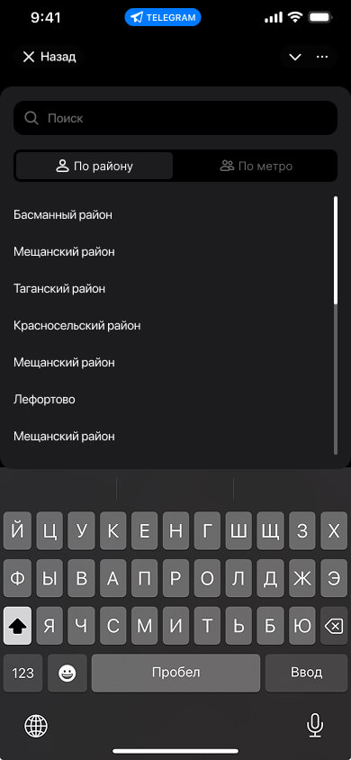
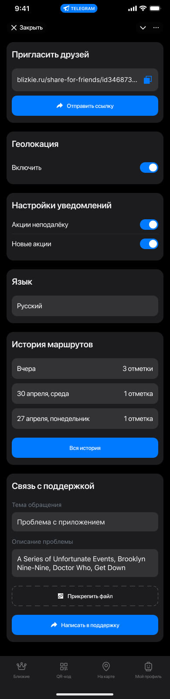
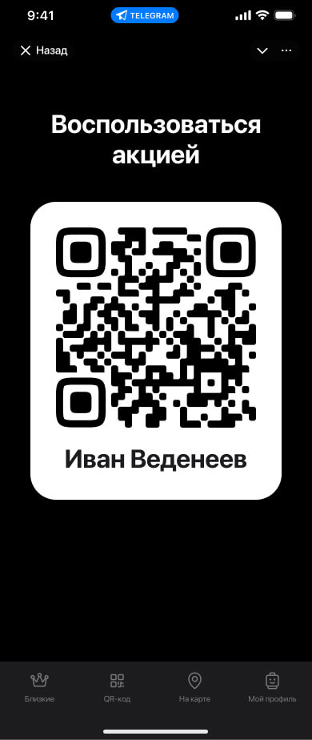
Собрал на Taiga UI
Чтобы упростить передачу разработке — прототипировал на Taiga UI, дизайн-системе от Т-Банка. Компоненты и паттерны уже собраны, стили согласованы. Разработчик получил макеты, которые сразу ложатся в код без дополнительных костылей.
Чему научил этот проект
Ключ был в том, чтобы не принять запрос за чистую монету. «Нарисуй экраны» — это почти никогда не настоящий запрос. За ним обычно стоит «помоги нам, чтобы это работало», и если дизайнер не поднимает этот вопрос — никто не поднимет.
Отдельная история — KPI. На этапе концепта команда считала только трафик в заведения и экономию пользователя. Для продукта этого мало: важны ещё D7/D30 retention, средний чек с акцией vs без, виральность через ТГ. Если бы кейс пошёл дальше — дашборд начинали бы с этих метрик.
Экраны ушли в разработку, но до релиза продукт, по моим данным, не дошёл. Бывает. Кейс остаётся ценным как упражнение на переопределение задачи и работу в жёстком таймлайне.